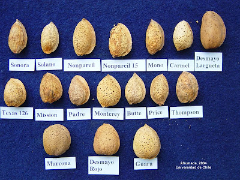
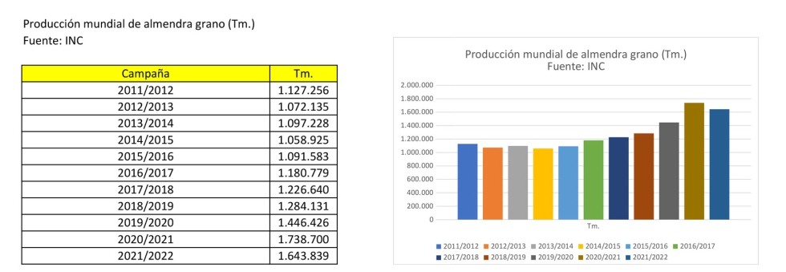

Tipus d'ametlles
Descripcions d'algunes varietats d'ametlles:
- ‘Mollar’
- Ametlla bastant gran, ampla, de color marró més o menys fosc, lleugerament rugosa. Època de floració mitjana, conreada a Espanya.
- ‘Marcona’
- Ametlla bastant gran, de forma arrodonida, lleugerament rugosa. Floració a principis de març i maduració tardana a principis d'octubre. És originària de la província d'Alacant (Espanya).
- ‘Llargueta’
- Existeixen diversos tipus locals en regions espanyoles, sent el més conegut Desmai llargueta. Ametlla allargada, punxeguda, llisa i de pela dura. Floració molt precoç i maduració molt tardana. Es conrea en tota la vall de l'Ebre, des de Saragossa fins a Tarragona, i a les províncies limítrofes de Lleida i Terol (Espanya).
- ‘Texas’
- Fruit gruixut. Floració tardana i maduració a mitjan octubre, a Europa es conrea a Nimes (França). El seu origen és Califòrnia.
Producció
Espanya és el tercer país més productor, sent la producció mundial d'unes 1,73 milions de tones l'any 2021. A més Espanya és el 2n país més consumidor d'aquesta.
Els principals països productors són:
| País | Tones |
| USA | 1289200 |
| Australia | 124439 |
| Espanya | 109200 |
| Turquia | 18000 |
| Tunissia | 16500 |
| Altres països | 86500 |
| Font: FAO Production Yearbook (1998) | |